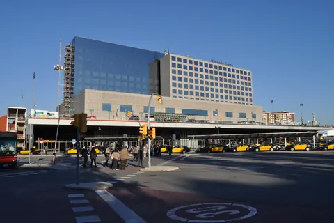
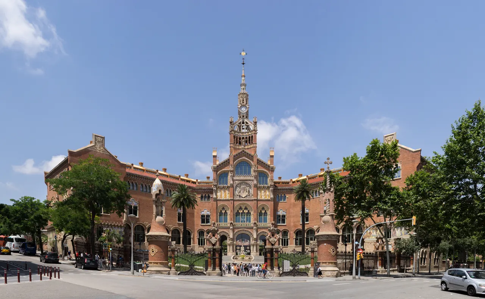
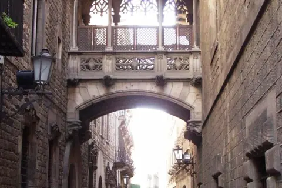
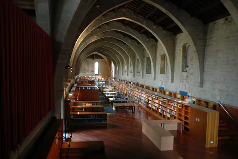
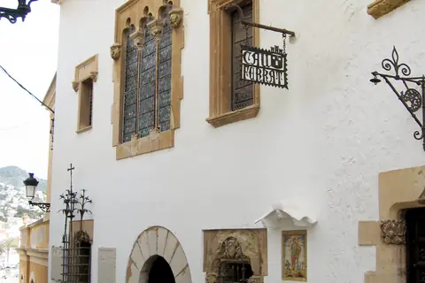
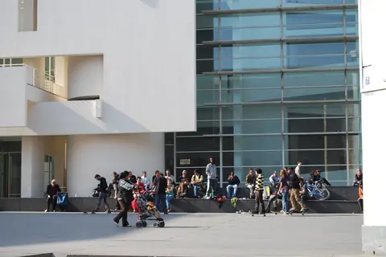
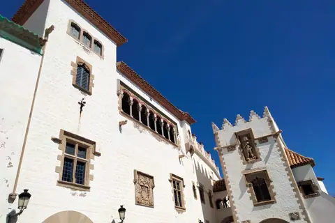

{kind=link}

Barcelona Sants
소요 60–90분 완충 — 서류·차량 점검·주차장 출차

1401년 라발 지구에 설립되었던 산타 크레우 병원의 후신으로, 19세기 말 카탈루냐 모더니즘 건축의 거장 류이스 도메네크 이 몬타네르(Lluís Domènech i Montaner)가 설계했다. 1997년 유네스코 세계유산으로 등재되었으며, 단일 건물군으로는 세계 최대 규모의 아르누보/모더니즘 건축 복합체로 꼽힌다.
시작은 한 은행가의 유산이었다. 파리에서 활동하던 카탈루냐 은행가 파우 힐(Pau Gil)이 1896년 사망하며 "최고의 의술과 위생 환경을 갖춘 성 바오로(Sant Pau)의 병원을 지어달라"는 유언과 함께 거액을 기부했다.
도메네크는 1902년부터 1913년까지 13개의 화려한 모더니즘 파빌리온을 완성했고, 그의 사후 아들 페레 도메네크가 6개 동을 추가로 건립했다. 환자가 비와 바람을 맞지 않고 이동할 수 있도록 모든 건물을 1km가 넘는 지하 터널망으로 연결한 혁신적인 설계였다.
사그라다 파밀리아가 신을 향한 가우디의 종교적 열망이라면, 산 파우는 인간을 치유하려는 도메네크의 휴머니즘과 미학의 결정체다. 붉은 벽돌과 찬란한 세라믹 타일, 정원의 오렌지 나무 사이를 걷다 보면 '치유를 위한 예술'이 무엇인지 실감하게 된다.
| 운영시간 | 월–일 09:30–18:30 (4–10월) |
|---|---|
| 휴무 | 12월 25일만 휴관 — 그 외 연중무휴 (4–10월 매일 09:30–18:30, 입장 마감 30분 전) |
| 요금 | 성인 €18 (14시 이전) / €17 (14시 이후) |
| 예약 | 자유관람은 예약 불요 표기 없음(현장 입장 가능), 가이드투어는 사전 예약 권장 — 주말·공휴일 11시 스페인어·12:30 카탈루냐어, 토요일 10:30 영어·12:00 프랑스어 |
| 소요시간 | 80분 재확인 |
| 항목 | 상세 정보 |
|---|---|
| 공식 주소 | Carrer de Sant Antoni Maria Claret, 167, 08025 Barcelona |
| 운영 시간 | 월–일 09:30–18:30 (4–10월 기준, 최종 입장 17:30) |
| 입장 요금 | 일반 자유관람권 €17.00 / 오디오가이드 포함 €21.00 성인 €18 (14시 이전) / €17 (14시 이후) |
| 예약 정책 | 온라인 사전 예매 권장 (현장 구매도 비교적 수월하나 대기 방지를 위해 예매 권장) |
| 접근성/동선 | 사그라다 파밀리아에서 Avinguda Gaudí 보행자 전용도로를 따라 도보 10~12분 직선 이동 (가장 추천하는 동선) |
| 대중교통 | 지하철 L5 Sant Pau / Dos de Maig 역 도보 3분 또는 L4 Guinardó / Hospital de Sant Pau 역 |
| 공식 정보원 | https://santpaubarcelona.org (Verified at: 2026-08-17) |
💡 현장 연결 팁: 사그라다 파밀리아 관람 후 지하철을 타지 말고, 플라타너스 가로수와 카페 테라스가 이어지는 '아빙구다 가우디'를 따라 걸어오면 가우디의 유기적 모더니즘에서 도메네크의 기하학적·식물적 모더니즘으로 이어지는 바르셀로나 건축의 흐름을 가장 완벽하게 체감할 수 있습니다.
도메네크는 일데폰스 세르다가 설계한 바르셀로나 에이샴플레(Eixample)의 완벽한 90도 격자 도시 계획을 거부하고, 병원 부지 전체를 격자 축에 대해 45도로 비틀어 배치했다.
이는 단순한 건축가의 고집이나 미적 변덕이 아니었다. 항생제가 개발되기 전인 20세기 초, 감염병과 결핵을 치료하는 최고의 무기는 신선한 바닷바람(환기)과 풍부한 직사광선(살균)이었다. 45도로 부지를 틀어 건물을 남동향으로 정렬함으로써, 모든 병동이 하루 종일 최대치의 자연 채광을 받고 지중해에서 불어오는 신선한 공기가 건물 사이사이를 막힘없이 통과하도록 설계한 것이다.
도메네크는 "아름다움이 환자의 영혼을 치유한다"고 믿었다. - 각 파빌리온은 정원으로 둘러싸여 환자들이 창밖으로 녹지와 꽃, 오렌지 나무를 바라볼 수 있었다. - 12개 파빌리온 지붕과 처마는 형형색색의 세라믹 타일과 모자이크(트렌카디스 기법)로 장식되어 있다. 세라믹은 오염에 강하고 물청소가 쉬워 위생을 유지하면서도 환자들에게 밝고 따뜻한 시각적 안정감을 주었다.
여러 파빌리온 중 '산 라파엘 동'은 1920년대 병원의 실제 운영 당시 모습을 그대로 복원해 놓았다. 흰색 철제 침대, 천장의 스테인드글라스, 라디에이터, 그리고 당시 환자들의 생활 기록이 전시되어 있어, 화려한 궁전 같았던 건물이 실제로는 수많은 서민 환자들을 돌보던 따뜻한 공공 병원이었음을 생생히 증명한다.

소요 60–90분 완충 — 서류·차량 점검·주차장 출차

기원전 1세기 로마 도시 바르시노의 성벽 위에 중세와 20세기 고딕 부흥이 층층이 쌓인 바르셀로나의 역사적 심장.

15세기 구 산타 크레우 고딕 병원이 카탈루냐 국립도서관으로 변모한 곳이자 가우디가 마지막 숨을 거둔 역사적 공간.

화가·작가·수집가 산티아고 루시뇰(1861–1931)이 자신의 철제 공예품과 미술 소장품을 두기 위해 만들었다.

리처드 마이어의 백색 모더니즘 건축과 세계 스케이터 문화가 공존하는 라발 지구의 현대미술관.

⚠ 9/1(화)에는 관람할 수 없다.